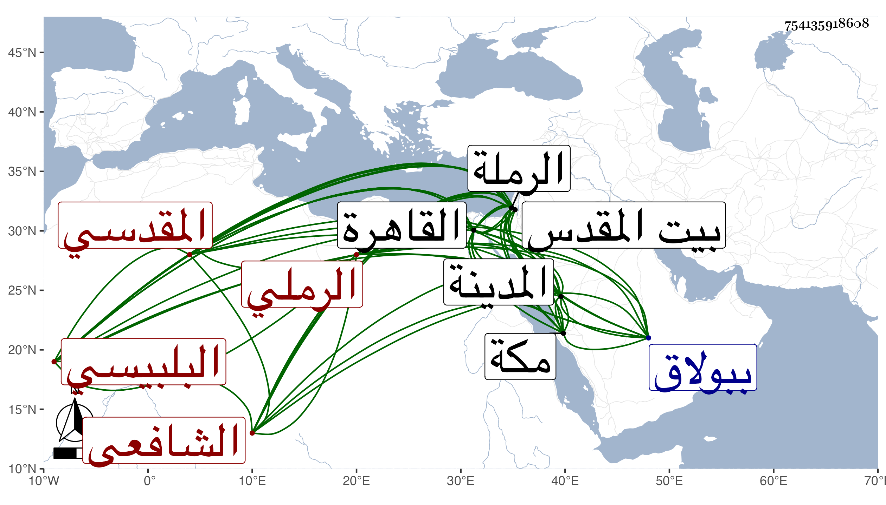

0902Sakhawi.DawLamic.ITO20230111-ara1.EIS1600.754135918608
Biography ID: 754135918608
575
محمد بن خليل بن يوسف بن علي أو أحمد بن عبد الله المحب أبو حامد البلبيسي الأصل الرملي المقدسي الشافعي نزيل القاهرة وهو بكنيته أشهر وربما قيل له ابن المؤقت لأن أباه كان موقتا . ولد في أواخر رمضان سنة تسع عشرة أو سبع عشرة وثمانمائة بالرملة ونشأ بها فحفظ القرآن وأربعي النووي وقطعة من المحرر لابن عبد الهادي وجميع ألفية العراقي والبهجة وجمع الجوامع وألفية النحو واللامية في الصرف كلاهما لابن ملك واللامية المسماة بالمقنع والجبر والمقابلة لابن الهائم والخزرجية في العروض وأرجوزة في الميقات حسبما قرأته بخطه ، وعرض على جماعة أجلهم الشهاب بن رسلان ولازمه من بعد موت أبيه بالرملة ثم ببيت المقدس تدرب به في الطلب وحمل عنه الكثير من تصانيفه وغيرها قراءة وسماعا وكذا أخذ عن الزين ماهر الحاوي تقسيما كان أحد القراء فيه والعز عبد السلام القدسي بقراءته اليسير من أول الحج من جامع المختصرات ورواية عن البرهان العرابي أحد فقهاء الصلاحية ثم عن شيخها الجمال بن جماعة بل قرأ عليه وسمع بعد ذلك ومن قبله حضر عند الشهاب بن المحمرة دروسه التي أقرأها بها في الروضة بل قرأ عليه قطعة من جمع الجوامع مع غيره من مروياته وقرأ في التوضيح لابن هشام على أبي القسم النويري وايساغوجي في المنطق على سراج الرومي وألفية العراقي على الشمس بن القباقبي المقري تلميذ الناظم بل قرأ عليه من مؤلفه مفتاح الكنوز في الأربعة عشر إلى أثناء النساء وأخذ أيضا عن العماد بن شرف وسمع على ابن المصري والقباني وعائشة الحنبلية وعيسى بن فاضل الحسباني وربما كان بقراءته وأجاز له أبو عبد الله الحكمي المغربي بل قال إنه أجاز له الشهاب الواسطي ثم ارتحل إلى القاهرة في سنة أربع وأربعين صحبة القاضي ناصر الدين ابن هبة الله البارزي فقطنها ، ولازم شيخنا حتى قرأ عليه شرح النخبة له وشرح ألفية العراقي وجملة من تصانيفه وغيرها وكتب عنه في الأمالي وغيرها والقاياتي وقرأ عليه قطعة من جمع الجوامع بحثا وسمع عليه في شرح البهجة وفي الكشاف وحاشيته وغير ذلك قراءة وسماعا والونائي وقرأ عليه قطعة من شرح الولي لجمع الجوامع ، ومما أخذه عنه ما أقرأه من الروضة والعلاء القلقشندي قرأ عليه في تقسيمي الحاوي والمنهاج والمحلى سمع عليه أشياء من تصانيفه وغيرها وابن المجدي سمع عليه تقسيم الحاوي وقطعة من شرح الجعبرية له وقرأ عليه اختصار مسائل الدور للأصفوني له والشهاب الخواص قرأ عليه الخزرجية في العروض وشرحها للسيد والمناوي قرأ عليه شرح البهجة مع ما بيضه من حاشيته عليها وجميع شرح جمع الجوامع للولي وغير ذلك قراءة وسماعا واشتدت عنايته بملازمته له في التقاسيم وغيرها والشرواني أخذ عنه شرح العقائد والعلاء الكرماني أخذ عنه المختصر والمطول وقطعة من آداب البحث والعيني قرأ عليه لشرح الشواهد له والشمني سمع عليه في الكشاف وحاشيته لسعد الدين وفي تفسير البيضاوي وغالب المختصر الأصلي مع شرحه العضد وحاشيته لسعد الدين وجميع المغني مرتين الأولى بمراعاة حاشية البدر الدماميني والثانية بمراعاة حاشيته هو ، وغير ذلك سماعا وقراءة ومما قرأه متن المقاصد في أصول الدين وشرحه لسعد الدين من أول المقصد الخامس إلى أثناء صفة الكلام ومن أول المواقف وشرحه للسيد إلى قريب أبحاث الوجود والأمين الأقصرائي قرأ عليه قطعة كبيرة من تفسير البيضاوي وسمع عليه أشياء والعز عبد السلام البغدادي قرأ عليه شرح تصريف العزي وسمع عليه جملة من العربية وغيرها والأبدي قرأ عليه ابن المصنف بتمامه ونحو ثلث المغني مع مراعاة حاشية البدر عليه وغير ذلك والزين طاهر سمع عليه في شرح الألفية لابن المصنف وفي العضد وغيرهما في آخرين وسمع على طائفة سوى من تقدم كابن ناظر الصاحبة وابن الطحان وابن بردس والزركشي وابن الفرات وسارة ابنة ابن جماعة والرشيدي والزين رضوان والصلاح الحكري وابن الملقن وأخته صالحة والشمس بن أنس المقسي والعلم البلقيني وعبد الكافي بن الذهبي والبرهان الصالحي والمحب الفاقوسي والمجد إمام الصرغتمشية وشعبان ابن عم شيخنا والزين بن خليل القابوني وعمر بن السفاح والسيد النسابة والنور البارنباري والشمس التنكزي والمحيوي بن الريفي وأم هانيء الهورينية ، وهو أحد من سمع ختم البخاري في الباسطية في أشياء ، وأجاز له جماعة ، وحج في سنة ثلاث وخمسين صحبة الزين عبد الباسط فأخذ بالمدينة النبوية عن المحب المطري وعبد الله الششتري وأبي الفرج الكازروني والتاج عبد الوهاب بن صلح وبمكة عن أبي الفتح المراغي والتقي بن فهد والزين الأميوطي والبرهان الزمزمي ووصفه الأبدي بأخينا الشيخ الفاصل ، والونائي بالشيخ العلامة وقراءته بأنها قراءة بحث ودراية نفع الله به ، وشيخنا بما أثبته في الجواهر مع ذكر تقريض له على شيء جمعه وأذن له في غير موضع في الإفادة ، وكذا أذن له المناوي في إقراء شرحي البهجة وجمع الجوامع لشيخه وإفادتهما مع أي كتاب شاء من الكتب المؤلفة في المذهب وبالغ في أوصافه ، وممن أذن له العيني وأثنى عليه بخطه غير مرة وكذا الشمني والأقصرائي ، وأوردت بعض كتابتهم في موضع آخر ، وتنزل في الخانقاه سعيد السعداء أول قدومه القاهرة وفي بعض الجهات وقرره الزين الاستادار في قراءة الحديث بجامعه ببولاق بإشارة شيخنا وتعرض له ابن الديري بسبب شئ نقل عنه في إمامهم بل أفحش في حقه بأخرة البرهان اللقاني قاضي المالكية وعبد الله الكوراني شيخ سعيد السعداء قياما من كل منهما مع حظ نفسه وما حمد أحد من العقلاء وأهل الخير صنيع واحد منهما ، وقاسى في جل عمره فاقة ومكث عزبا مدة ثم تزوج ورزق الأولاد وترقع حاله ، وزاحم عند كثير من الرؤساء كالبدر البغدادي الحنبلي والسفطي وابن البارزي بتربية ابن عمه ابن هبة الله له عنده حتى كان يصلي به إماما بل عينه للقراءة في نسخته بفتح الباري على مؤلفه ثم أعرض عنه في كليهما بواسطة قرناء السوء ولكن لم يقطع عنه راتبه ولا انفك هو عن التردد إليه ، واستنابه شيخنا في القضاء لمزيد إلحاحه عليه في ذلك ثم المناوي ولم يحصل فيه على طائل بل ربما عاد عليه بعض الضرر لكون المناوي ندبه للفسخ على الصلاح المكيني من ابنه السبرمائي وكاد أن يبت الحكم فخيل فبادر القاضي علم الدين وعوق عليه معلومه في الخشابية فلم يقدر على وصوله إليه إلا بعد موته ، هذا كله مع مداومته للدروس وحرصه على الكتابة والانتقاء ونحو ذلك حتى أنه كتب بخطه الكثير بل شرح المنهاج والبهجة وجمع الجوامع وغيرها مما لم يتأهل له لعدم إتقانه وكثرة أوهامه وكلماته الساقطة وتراجمه الهابطة . وأخذ عدة من تصانيفي وتصانيف غيري فمسخها مع كتابة الشمني والأقصرائي وإمام الكاملية والخطيب أبي الفضل النويري بالثناء البالغ على بعضها بل وشيخنا قصدا منهم بذلك جبر خاطره وإحالة للأمر فيه على ناظره وكذا له نظم من نمط تأليفه وربما أخذ عنه بعض الطلبة ، وبالجملة فكان مديما للتحصيل مقيما على الجمع والكتابة في التفريع والتأصيل لا أعلم عليه في دينه إلا الخير ولا أتكلم بما يتقول به الغير ولكنه ليس بالمتقن في حفظه ونقله ولا بالمتين في فهمه وعقله والغالب عليه سلامة الفطرة التي ينشأ عنها من أفعاله وأقواله ما يقدر العاقل قدره مما يقتضي حصول الاستثقال بمجالسته والاستهزاء بكثير من كلماته ومحاورته وربما مسوه ببعض المكروه وهو لا يتغير عن طبعه ولا يتصور استجلاب ما لعله يكون وسيلة لنفعه ويعتقد أن حسدهم إياه سببا لصنيعهم فيخف عنه ما يشاهده منهم في تفريقهم وتجميعهم حتى أنني قرأت بخطه ما نصه : ووالله إنني لا أشك أن كل ما حصل لي من خيري الدنيا والآخرة إنما هو من بركة لحظ الشهاب بن رسلان وأنفاسه الزكية فمن بركته الظاهرة علي إلى وقتنا هذا أنني لم أصحب أحدا من الدنيا ولا من علماء الآخرة إلا وكان لي عنده من المحبة والقبول الغاية القصوى بحيث أني أحسد فيه من أعظم خواصه . قلت والعجب أنه استفيض أنه مقته وأن كل ما حصل له من الخمود والخمول بسبب ذلك ولم يزل على حاله إلى أن مات بعد توعكه مديدة وتكرر اجتماعه بي بعد قدومي من الحج غير مرة في يوم الأحد حادي عشري صفر سنة ثمان وثمانين وصلى عليه من الغد ودفن بحوش سعيد السعداء وترك أولادا رحمه الله وإيانا وعفا عنه وعوضه الجنة ومن نظمه مما كتبه عنه الشهاب الحجاري شاعر الوقت :
| إرحم إله الخلق عبدا مذنبا | بالجود يرجو العفو في كل زمن |
| وهب له يا رب رحمة بها | ترحم كل الخلق سرا وعلن |
